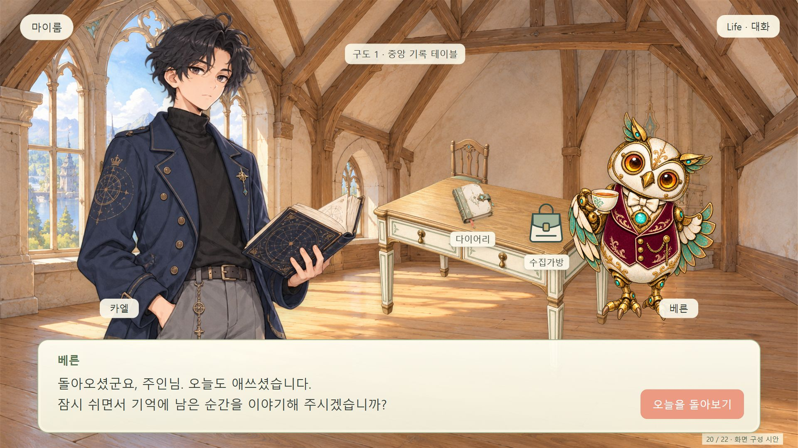
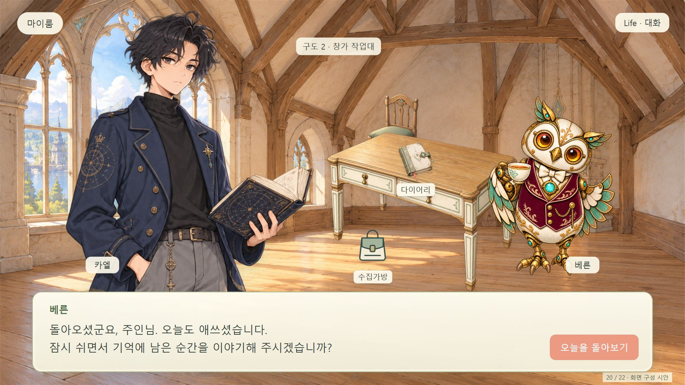
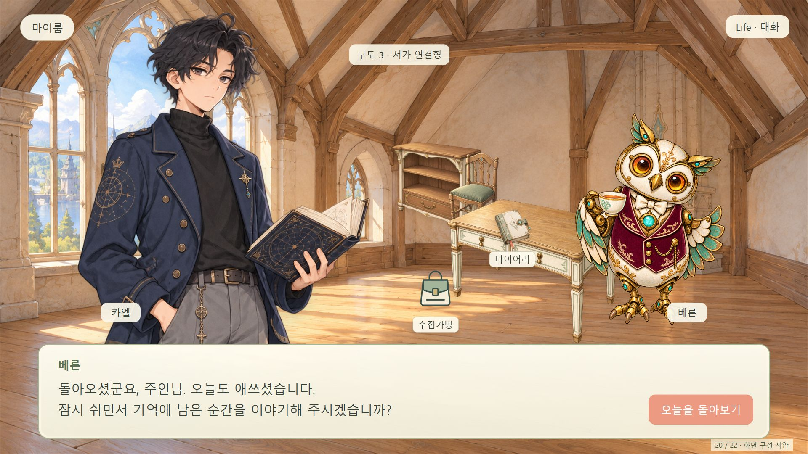
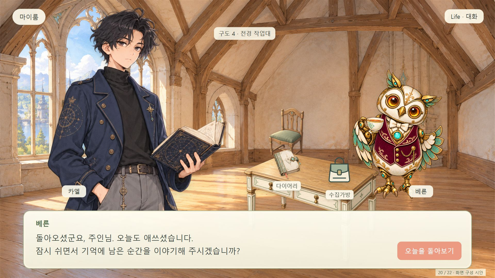
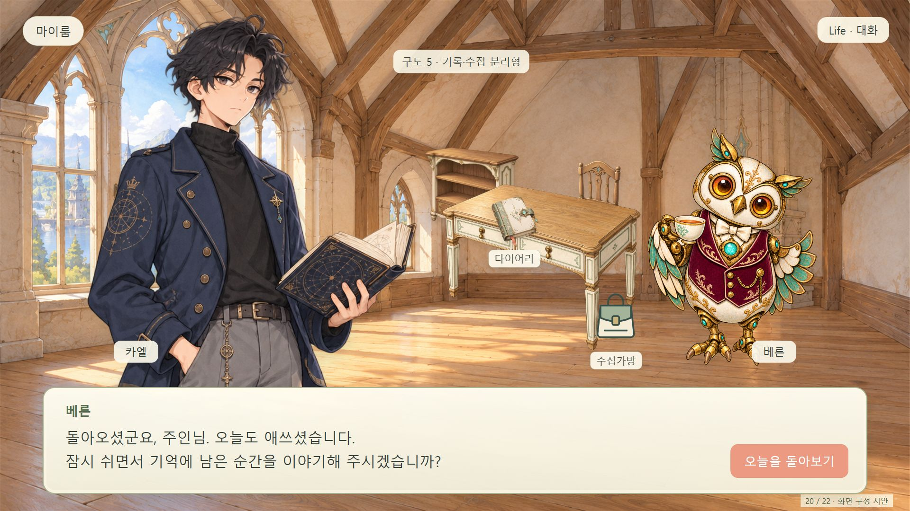
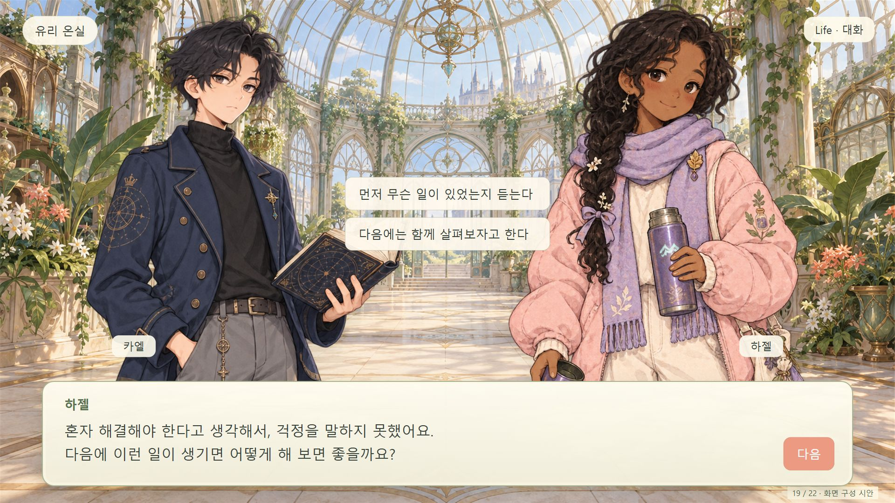

마이룸 5가지 구도와 이야기 선택 수정
왼쪽 플레이어 · 오른쪽 베른 · 중앙 다이어리와 수집가방. 침대는 배치하지 않았습니다.
가방은 기존 UI 아이콘으로 표시한 배치 시안이며, 가구의 바닥 접점과 원근은 구도 선택 후 정밀 조정합니다.
01 · 중앙 기록 테이블
이 구도에서 다이어리·가방 열어보기 →
02 · 창가 작업대
이 구도에서 다이어리·가방 열어보기 →
03 · 서가 연결형
이 구도에서 다이어리·가방 열어보기 →
04 · 전경 작업대
이 구도에서 다이어리·가방 열어보기 →
05 · 기록·수집 분리형
이 구도에서 다이어리·가방 열어보기 →
19 · 카엘 / 하젤 얼굴 비율 수정
대화 화면 열기 →